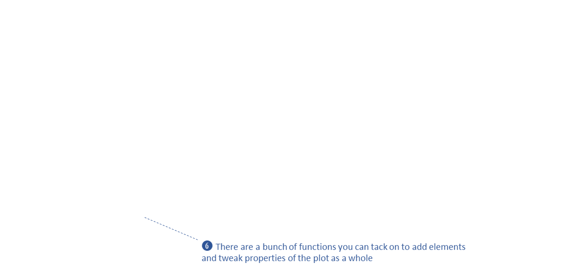
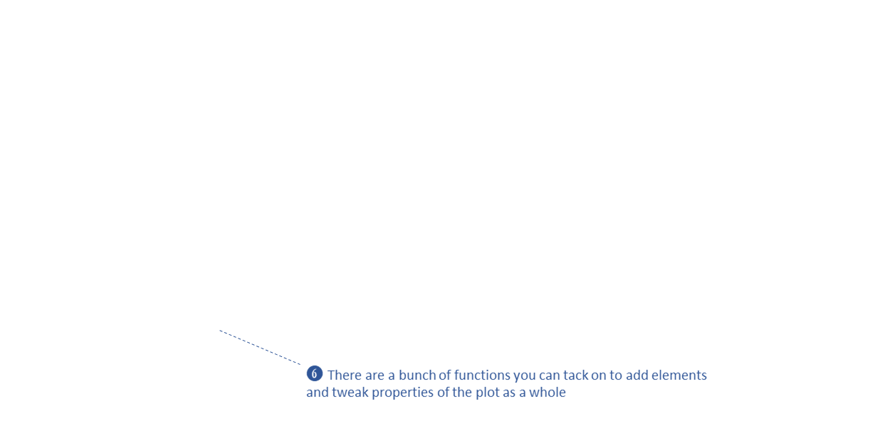

Analyzing Voter Turnout Data with R
Part 1: Data Wrangling and Geospatial
Fundamentals

Data
for Democracy, Fall 2024
Andy Lyons
https://ajlyons.github.io/d4d2024/
About Me…

About You…
Today’s Outline
Part 1a. Data Wrangling
Fundamentals
- packages
- functions
- piping syntax
- selecting rows and columns with dplyr
Part 1b. Geospatial Data
Fundamentals
- geospatial data in R
- common spatial data manipulations
- making maps with ggplot
- importing administrative boundaries and enumeration areas with
tigris
- importing data from ArcGIS with
arcgislayers
- Exercise 1. Import Census and Municipal
Geometries
Part
2. Importing, Joining, and Plotting Shapefiles and Tabular Data
- better ways to import tabular data
- importing Shapefiles and other GIS data on disk
- importing spatial data from US Census with
tidyCensus
- joining tables
- reshaping data from wide to long
- Exercise 2. Import and Map Voter Turnout
Data
Part 3. Importing Census
Data
- tidyCensus
- finding variables
- Exercise 3. Importing Data from the Decennial
and ACS Census
Part 4. Areal Interpolation
- Areal interpolation
- Exercise 4. Areal Interpolation
Part 1a:
Data Wrangling
Fundamentals
Functions
The keys to R’s superpowers are functions! There are
four things you need to know to use a function:
What Do Functions Return?
- numbers
- dates
- text
- data frames and matrices
- spatial data
- plots
- trained regression models
- HTML widgets
- another function that returns a color ramp
- a drone image collection metadata record
- ⇒ almost anything you can think of can
be returned by a function!!
- ⇒ anything returned by a function can
also be saved to an object
Which function should I use?
Finding the right R function, half the battle is.
- Jedi MasteR
Yoda
|

|
Ask your friends
Ask Google
Cheatsheets!
Function Help
Every function has a help page. To get to it enter ?
followed by the name of the function (without parentheses):

Function Arguments
Most functions take arguments. Arguments can be required or
optional (i.e. have a default value).
See the function’s help page to determine which arguments are
expected. Example:

x and size have no default value → they are
required
replace and prob have default values → they
are optional
To
name or not to name your arguments? That is the question.
All arguments have names. You can explicitly name arguments when
calling a function as follows:
rnorm(n = 100, mean = 10, sd = 0.3)
Benefits of naming your arguments:
- Helps you remember what each argument is
- You can enter then in any order
- You can skip arguments if you’re happy with the default value
But you can omit argument names if you pass them in
the order expected and don’t skip any.
rnorm(500, 50, 3) ## generate 500 normally distributed random
## numbers with a mean of 50 and stand dev = 3.
R Packages

Packages are what R calls extensions or
add-ons.
What’s in a package?
- additional functions!
- function help pages
- tutorials (Vignettes)
- datasets
Installing and Using Packages
Three simple steps to use the functions in a package:
Figure out which package you need
Install (i.e., download) it (just once)

- Load it into memory (must do this every time you start
RStudio)
Piping

Piping syntax is an alternative way of writing
arguments into functions.
With piping, you use the pipe operator |> (or %>%) to ‘feed’ the result of one function
into the next function.
Piping allows the results of one function to be passed as the
first argument of the next function. Hence a series of
commands to be written like a sentence.
Example
Consider the expression:
zoo(moo(boo(foo(99)),n=4))
Piping Tips and Tricks
Keyboard shortcut for inserting the pipe operator:
ctrl + shift + m
You can tell RStudio which pipe to insert under Global Options
>> Code
|> (‘native’ pipe
introduced R4.0)
%>% (from
magrittr package)
To split a chain of functions across multiple lines, end
each line with a pipe operator:
seq(1, 10, 0.1) |>
log() |>
sum()
## [1] 141.4023
If the receiving function requires additional arguments, just add
them starting with the 2nd argument (or use named
arguments):
## [1] 0.07 0.87 0.09 0.80 0.60
Same Function Name, Different Packages
Occasionally two or more packages will have different functions that
use the same name. 
When this happens, R will use whichever one was loaded first.
Best practice: use the package name and the :: reference
to specify which package a function is from.
x <- sp::over()
x <- grDevices::over()
y <- raster::select()
y <- dplyr::select()
When you use the package_name::function_name
syntax, you don’t actually have to first load the package with
library().
Resolving Name Conflicts with the conflicted
Package
When you call a function that exists in multiple packages, R uses
whichever package was loaded first.
The conflicted package helps you avoid problems with
duplicate function names, by specifying which one to prioritize no
matter what order they were loaded.
library(conflicted)
# Set conflict preference
conflict_prefer("filter", "dplyr")
conflict_prefer("count", "dplyr")
conflict_prefer("select", "dplyr")
# From here on out, anytime we call select() or filter(), R will
# always use the dplyr version.
Data Wrangling: What do we mean?
Whatever is needed to get your data frame ready
for the function(s) you want to use for analysis and visualization.

also called data munging, manipulation, transformation, etc.
Often includes one or more of:
- dropping columns
- renaming columns
- changing the order of columns
- creating new columns with an expression
- filtering rows
- sorting rows
- going from ‘long’ to ‘wide’ formats
- joining data frames based on a common field
- merging / stacking data frames together
- splitting tables
- aggregating rows into groups
- splitting columns into new columns / rows
Data Wrangling with dplyr
An alternative (usually better) way to wrangle data frames than base
R.
Part of the tidyverse.
Best way to familiarize yourself - explore the cheat sheet:
Popular dplyr Functions
Row and Column Manipulations
|
subset rows
|
filter(), slice()
|
|
order rows
|
arrange()
|
|
pick column(s)
|
select(), pull()
|
|
add new columns
|
mutate()
|
Chaining dplyr functions
Most dplyr functions take a tibble as the first
argument , and return a tibble.
This makes them very pipe friendly.
Example
Look at the storms tibble:
library(dplyr)
head(storms)
## # A tibble: 6 × 13
## name year month day hour lat long status category wind pressure
## <chr> <dbl> <dbl> <int> <dbl> <dbl> <dbl> <fct> <dbl> <int> <int>
## 1 Amy 1975 6 27 0 27.5 -79 tropical de… NA 25 1013
## 2 Amy 1975 6 27 6 28.5 -79 tropical de… NA 25 1013
## 3 Amy 1975 6 27 12 29.5 -79 tropical de… NA 25 1013
## 4 Amy 1975 6 27 18 30.5 -79 tropical de… NA 25 1013
## 5 Amy 1975 6 28 0 31.5 -78.8 tropical de… NA 25 1012
## 6 Amy 1975 6 28 6 32.4 -78.7 tropical de… NA 25 1012
## # ℹ 2 more variables: tropicalstorm_force_diameter <int>,
## # hurricane_force_diameter <int>
Filter out only the records for category 3 or higher storms
storms |>
select(name, year, month, category) |> ## select the columns we need
filter(category >= 3) ## select just the rows we want
## # A tibble: 1,262 × 4
## name year month category
## <chr> <dbl> <dbl> <dbl>
## 1 Caroline 1975 8 3
## 2 Caroline 1975 8 3
## 3 Eloise 1975 9 3
## 4 Eloise 1975 9 3
## 5 Gladys 1975 10 3
## 6 Gladys 1975 10 3
## 7 Gladys 1975 10 4
## 8 Gladys 1975 10 4
## 9 Gladys 1975 10 3
## 10 Belle 1976 8 3
## # ℹ 1,252 more rows
dplyr functions generally allow you to enter column
names without quotes.
Summary: Data Wrangling Fundamentals
the keys to using are lie in functions
four key things to know about functions
- which function to use
- arguments - names, order, which are required,
default values
- what the function returns
- side actions the function performs (if any)
packages give you additional functions
piping is a way to chain functions
together
R is quite good at data wrangling
dplyr is a good data wrangling
package from the tidyverse
use filter() and
select() to select rows and
columns
Part 1b:
Geospatial Data
Fundamentals
sf

sf is a popular package for working
with vector geospatial data
sf stands for ‘simple feature’, which is a standard
(developed by the Open Geospatial Consortium) for storing various
geometry types in a hierarchical data model.
A ‘feature’ is just a representation of a thing in the real world
(e.g. a building, a city, ).
Package features:
- read / write / create / edit / manipulate GIS data in R
- leverages open source libraries: GDAL, GEOS, PROJ
- fast IO
- enhanced plotting
- objects are supported by an increasing number of other geospatial
packages
- aligns with other GIS software that use the sf data model
(e.g. QGIS, PostGIS)
sf functions
- consistent function names (most start with
st_)
|> pipe friendly!
- everything you can do with a regular data frame, you can do with a
sf data frame (almost)
- integrated with the tidyverse packages
Projections
How do we squish a round planet onto flat maps / screens?

There are 1000s of projections!
Each one has an EPSG number.
The more generic term for projections is Coordinate Reference
System (CRS).
CRS also includes ‘unprojected’ geographic
coordinates (longitude & latitude).
Why do I need to know this?
Projections are particularly important in R whenever you want to:
- overlay layers in a plot (most R packages do not
reproject on the fly)
- compute or use geometric measurements, like distance or area
- do spatial queries or joins
CRS functions in sf
All sf objects are able to store projection
info.
st_read() imports the CRS info from
standard GIS file formats
st_crs() creates, views,
or assigns the CRS
st_transform() (re)projects sf objects into
a different crs
Common EPSG Numbers
4326. Geographic, WGS84 (default for lon/lat)
4269. Geographic, NAD83 (USA Fed agencies like Census)
5070. USA Contiguous Albers Equal Area Conic
3310. CA Albers Equal Area
32610. UTM Zone 10, WGS84 (Northern Cal)
32611. UTM Zone 11, WGS84 (Southern Cal)
3857. Web Mercator (web maps)
The one-stop shop for finding EPSG numbers and PROJ4 strings is http://www.spatialreference.org. (Google usually
works also).
Reference code for your convenience:
## Some common epsg numbers in California
epsg_geo_wgs84 <- 4326
epsg_geo_nad83 <- 4269
epsg_utm10n_wgs84 <- 32610
epsg_utm11n_wgs84 <- 32611
epsg_utm10n_nad83 <- 26910
epsg_utm11n_nad83 <- 26911
epsg_webmerc <- 3857
epsg_caalbers <- 3310
To view all EPSG codes (>5,500), run
rgdal::make_EPSG()
See also Projection and Datum Guidelines for California
(CDFW)
tigris
The tigris
package (by Kyle Walker) provides functions to download Shapefiles from
the US Census Bureau.
Geometries from the US
Census Bureau

tigris features:
- easy-to-use functions to import data
- no Census API key required!
- get enumeration areas for any year available (more
info)
- most functions allow you to query by state and/or county
- objects come into R as simple features (sf)
- request ‘cartographic boundary’ areas (
cb = TRUE) to
mask areas by coastlines & water features
- reduced resolution versions available (1:500k, 1:5m, 1:20m) for
better performance over large areas
- caching supported (no need to download the same file twice)
- option to keep the downloaded Shapefile
tigris only downloads the geometries. To get census data
as spatial objects, see tidyCensus.
tigris functions
- states()
- counties()
- tracts()
- block_groups()
- blocks()
- school_districts()
- congressional_districts()
- state_legislative_districts()
- voting_districts() **
- zctas()
Most of these functions have arguments you can use to limit the
results to specific state(s) and/or county(s).
Example
Import census tracts boundaries for Alachua County, FL:
library(sf)
library(tigris)
alachua_tracts_sf <- tigris::tracts(state = "FL", county = "Alachua", cb = TRUE, progress_bar = FALSE)
plot(alachua_tracts_sf$geometry, axes = TRUE, main = "Census Tracts, Alachua County, FL")
arcgislayers
arcgislayers
package (by Josiah Parry) provides an R interface to work with ArcGIS
services on ArcGIS.com and ArcGIS Portal using the API
Key functions include:
- importing vector and raster data from ArcGIS.com into R
- publishing / updated data that you have created in R
- performing raster functions (on the server)
This is really useful, because:
- many government agencies publish GIS data with ArcGIS
- if the data are publicly available, you don’t need
an ArcGIS.com account to download it
- you don’t need ArcGIS Pro
- you can pass both attribute and
spatial filters when requesting data (which will be
executed on the server)
Go to the “item details” page on ArcGIS.com for the layer you
want.
Find the URL for the FeatureServer or
MapServer.
Create a connection to the FeatureServer or MapServer (with
arc_open()).
Use get_layer() to create a connection to the
specific FeatureLayer you want to import.
Import the layer using arc_select(), providing an
attribute and/or spatial query expression if needed.
The layer comes into R as a simple feature (sf) object
Example: Import Public Data from ArcGIS.com
library(sf)
library(arcgislayers)
## URL for a pubicly available Feature Server
counties_featsrv_url <- "https://services.arcgis.com/P3ePLMYs2RVChkJx/ArcGIS/rest/services/USA_Counties_Generalized_Boundaries/FeatureServer/"
## Create a FeatureServer object
counties_featsrv_fs <- arc_open(counties_featsrv_url)
counties_featsrv_fs
## <FeatureServer <1 layer, 0 tables>>
## CRS: 4326
## Capabilities: Query,Extract
## 0: USA Counties - Generalized (esriGeometryPolygon)
## List the layers available
arcgislayers::list_items(counties_featsrv_fs)
## # A data frame: 1 × 9
## id name parentLayerId defaultVisibility subLayerIds minScale maxScale
## * <int> <chr> <int> <lgl> <lgl> <int> <int>
## 1 0 USA Count… -1 TRUE NA 0 0
## # ℹ 2 more variables: type <chr>, geometryType <chr>
## Create a FeatureLayer object
counties_featsrv_fl <- arcgislayers::get_layer(counties_featsrv_fs, id = 0)
counties_featsrv_fl
## <FeatureLayer>
## Name: USA Counties - Generalized
## Geometry Type: esriGeometryPolygon
## CRS: 4326
## Capabilities: Query,Extract
## View the fields in the attribute table
## list_fields(counties_featsrv_fl) |> View()
## Import just the Florida Counties
fl_counties_sf <- arc_select(counties_featsrv_fl, where = "STATE_FIPS = '12'")
plot(fl_counties_sf$geometry, axes = TRUE)
To import non-public data from ArcGIS online /
portal, you need to authenticate by:
Create a Developer Auth Credentials (i.e., a service account) by
logging into ArcGIS.com > Content > Add Content > New Developer
Auth Credentials).
Feed your ‘client id’ and ‘client secret’ into
arcgisutils::auth_code() or
arcgisutils::auth_client() to generate a temporary
token.
Pass the token to arc_open(),
arc_select(), and other functions where needed.
Refresh the token when needed with
arcgisutils::refresh_token().
ggplot
ggplot2 is an extremely popular plotting package for R.
Plots are constructed using the ‘grammar of graphics’ metaphor.
Example
Load Palmer Penguins data frame:
library(palmerpenguins)
head(penguins)
## # A tibble: 6 × 8
## species island bill_length_mm bill_depth_mm flipper_length_mm body_mass_g
## <fct> <fct> <dbl> <dbl> <int> <int>
## 1 Adelie Torgersen 39.1 18.7 181 3750
## 2 Adelie Torgersen 39.5 17.4 186 3800
## 3 Adelie Torgersen 40.3 18 195 3250
## 4 Adelie Torgersen NA NA NA NA
## 5 Adelie Torgersen 36.7 19.3 193 3450
## 6 Adelie Torgersen 39.3 20.6 190 3650
## # ℹ 2 more variables: sex <fct>, year <int>
Use ggplot to make a scatter plot:
library(ggplot2)
ggplot(penguins, aes(x = flipper_length_mm, y = bill_length_mm, color = species)) +
geom_point() +
ggtitle("Bill Length vs Flipper Length for 3 Species of Penguins")
Maping Columns to Symbology Properties with aes()
ggplot(penguins, aes(x = flipper_length_mm , y = bill_length_mm , color = species)) +
geom_point() +
ggtitle("Bill Length vs Flipper Length for 3 Species of Penguins")
aes() sets the default source for each visual property
(or aesthetic) of the plot layers
- note you don’t need to put column names in quotes
- some common visual properties:
x - where it falls along the x-axis
y - where it falls along the y-axis
color
fill
size
linewidth
- which visual properties are needed depends on the
geom_xxxx() functions you use
- only put in
aes() the visual properties you want linked
to the data
Geoms
- geom_point()
- geom_bar()
- geom_boxplot()
- geom_histogram()
- visual properties can be linked to a column in the data frame or
manually specified
geom_point(col = pop_size)
geom_point(col = “red”)
Example:
In the example below, note where geom_boxplot() gets its
visual properties:
- x and y are linked to columns in
the dataframe and inherited from
aes()
- color, fill, and
size are manually specified
ggplot(penguins, aes(x = species, y = bill_length_mm)) +
geom_boxplot(color = "navy", fill = "yellow", size = 1.5)
## Warning: Removed 2 rows containing non-finite outside the scale range
## (`stat_boxplot()`).

Adding visual elements to a
plot
geom_xxxx() functions can also be used to add other
graphic elements:
ggplot(penguins, aes(x = species, y = bill_length_mm)) +
geom_boxplot(color = "navy", fill = "yellow", size = 1.5) +
geom_hline(yintercept = 43.9, linewidth = 3, color="red") +
geom_label(x = 3, y = 58, label = "Gentoo penguins \n are just the best!")
## Warning: Removed 2 rows containing non-finite outside the scale range
## (`stat_boxplot()`).
Making maps with ggplot
Making ggplots with geospatial data (i.e., maps) is not that
different than regular ggplots.
A few differences:
- we use sf objects as the data source (must all be in the same
CRS)
- draw layers with
geom_sf()
- most layers will be based on different spatial data, so in general
there is no need to define data in the opening
ggplot()
- order of the layers matters
- the
ggspatial package has functions you can use to add
other map elements (e.g., scale bar)
geom_sf()
The magical powers of geom_sf():
- no need to define the columns for ‘x’ and ‘y’ in
aes(),
geom_sf() figures it out!
geom_sf() will draw points, lines or polygons,
depending on the feature type
- Just like other geom functions,
geom_sf() provides lots
of options to customize the visual properties. Most of these can be
mapped to attribute fields!
- fill color
- outline color
- point size and shape
- line color
- etc.
Example: Make a map of Yosemite Fire Points
1) Import the layers
library(sf)
epsg_utm11n_nad83 <- 26911
## Park boundary
yose_bnd_utm <- sf::st_read(dsn="./data", layer="yose_boundary", quiet=TRUE) |>
st_transform(epsg_utm11n_nad83)
## Fire ignition points
yose_firehist_pts_utm <- sf::st_read("./data/yose_firehistory.gdb", "YNP_FireHistoryPoints", quiet=TRUE) |>
st_transform(epsg_utm11n_nad83)
2) Plot
library(ggplot2)
library(dplyr)
ggplot() +
geom_sf(data = yose_bnd_utm) +
geom_sf(data = yose_firehist_pts_utm |> filter(DECADE >= 2010), color="#f01616", shape=16, cex=0.7) +
labs(title = "Fire ignition points in Yosemite NP", subtitle = "2010-2019")
Summary: Geospatial Data Fundamentals
the sf package is the go-to package
for importing and working with vector geospatial data
projections have to be dealt with when:
- overlaying data on maps
- using geoprocessing functions that use or compute geometric
properties (e.g., distance, area)
memorize the EPSG codes for the CRS’s that you commonly work
with
tigris
provides R functions to download TIGER Line Shapefiles from the US
Census Bureau
arcgislayers
provides R functions to import data from ArcGIS in the cloud (both
ArcGIS Online and ArcGIS Enterprise)
ggplot works really well for making simple maps in R (thanks to
geom_sf())
Exercise 1: Import Census and Municipal Geometries
In this exercise, we will:
the following datasets for Camden County, NJ:
- county boundary
- census tracts (2020)
- census blocks (2020)
- zip code tabulation areas (ZCTAs) (2020)
- municipalities
- wards
Break!


 
